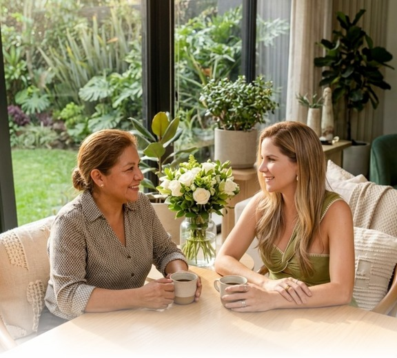

Las manos que
sostienen tu hogar
sostienen tu hogar
Empatía y puertas abiertas con tu asistente del hogar
UNA CARTA DE MARÍA TERESA ESPINOSA
Interiorista y Home Coach · MTE
© LIVIIN · FOR BETTER LIVING
Bonus de cortesía · 2026

Empatía y puertas abiertas con tu asistente del hogar
UNA CARTA DE MARÍA TERESA ESPINOSA
Interiorista y Home Coach · MTE
© LIVIIN · FOR BETTER LIVING
Bonus de cortesía · 2026
A cada mujer que ha sostenido
mi hogar con sus manos.
Ustedes me enseñaron que el liderazgo
del hogar empieza con la mirada.
Cuando terminé de escribir El arte de liderar tu hogar, sentí que faltaba algo.
Había hablado de filosofía, de método, de herramientas, de conversaciones. Te había entregado todo lo que sé sobre cómo dirigir una casa con calma. Pero había una conversación que se me había quedado adentro — y no me dejaba cerrar el libro en paz.
Era la conversación sobre ellas.
Sobre las mujeres que llegan a nuestra casa cada mañana. Que dejan la suya para sostener la nuestra. Que cuidan lo que más amamos sin que muchas veces sepamos sus historias, sus miedos, sus sueños.
Por eso este regalo. Porque hay cosas que no caben en un manual de liderazgo — pero sin las cuales ningún liderazgo es real.
Fue en pandemia. Pero no en mi quiebre — de ese ya te conté en el otro libro. Fue en otro momento, más silencioso, que casi nadie nota.
Fue cuando empecé a preguntarles a ellas cómo estaban.
Te confieso algo: al principio lo hacía con miedo. Miedo a que sus respuestas me sumaran una responsabilidad más, en un momento en que yo apenas podía con la mía. Pero algo dentro de mí me dijo que tenía que preguntar igual.
Y empezaron a aparecer las historias.
Glendis tenía a sus hijos en Venezuela. Los veía crecer por video. Les mandaba dinero. Sostenía mi casa mientras la suya quedaba a miles de kilómetros, en manos de otros.
Karina no tenía tres hijos como yo creía. Tenía cinco. Por eso vivía pegada al teléfono — no era distracción, era una madre coordinando desde lejos quién cuidaba a los más pequeños mientras ella cuidaba a los míos.
Ahí entendí algo que cambió mi forma de liderar mi hogar para siempre: las mujeres que volvían a mi casa cada día, después del encierro, no volvían por el sueldo. Volvían por el aprecio. Por cómo las mirábamos como personas, no como empleadas.
Este regalo no es un manual de cómo ser "buena patrona". Lo que vas a encontrar aquí es una invitación a mirar diferente a la mujer que te acompaña en casa. Y al mismo tiempo, una invitación a liderar con límites. Empatía con claridad. Vínculo con límites. Puertas abiertas, en los dos sentidos.
Si lo que leíste en el ebook principal te dio el método, lo que vas a leer aquí te va a dar el corazón.
Te leo con calma. Tómate tu tiempo. Esto es un regalo.
— María Teresa Espinosa
Interiorista y Home Coach · MTE
Lee a tu ritmo. Cada movimiento puede leerse solo.
Antes de hablar de empatía, hay que practicarla.
¿Alguna vez te has detenido a pensar en lo que vive tu asistente del hogar antes de llegar a tu casa?
No me refiero a si desayunó o no. Me refiero a algo más profundo. A todo lo que ella ya vivió antes de tocar tu puerta — un recorrido invisible que casi nunca consideramos, y que sin embargo determina cómo va a estar ese día contigo.
Este movimiento es una pausa. Una invitación a hacer un ejercicio que muy pocas dueñas hacen — y que cambia, desde la raíz, la forma en que vas a recibirla mañana.
Antes de hablar con ella, antes de capacitarla, antes de pedirle nada — ponte en sus zapatos.
Cada asistente del hogar tiene un camino propio. Algunas son internas y dejaron su pueblo, su familia, su tierra para venir a vivir a una casa que no es suya. Otras viajan cada día desde lejos, en transporte público, atravesando ciudades que no siempre son seguras.
Y todas — todas — antes de entrar a tu casa, ya hicieron algo:
Dejaron la suya.
Dejaron a sus hijos al cuidado de otros. Dejaron pendientes en su propia cocina, conversaciones sin terminar. Y aún así, llegan. Sonríen. Saludan. Empiezan a sostener tu hogar. Eso, antes de cualquier otra cosa, merece ser visto.
Casi todas contratamos a alguien sabiendo muy poco de quién es. Sabemos su nombre, sus referencias, los años de experiencia. Pero no sabemos lo importante:
No sabemos si eligió este oficio o lo aceptó porque era lo que había. Hay mujeres con verdadera vocación de servicio — y hay otras que están aquí mientras encuentran otra cosa. Las dos merecen respeto. Pero no se lideran igual.
No sabemos qué soñaba ser. Muchas tenían otros planes que la vida fue posponiendo. Algunas todavía tienen ese sueño guardado.
No sabemos qué carga emocional trae ese día. Una llamada antes de salir. Un hijo enfermo. Una deuda pendiente. Cosas que ella no va a contarte — pero que están ahí, en cada gesto.
No saber está bien. Lo que no está bien es olvidar que no sabemos, y exigirle como si fuera una máquina sin historia.
Mañana, antes de que ella llegue, regálate dos minutos.
Quédate quieta. Cierra los ojos si quieres. Y pregúntate:
¿Qué tuvo que hacer ella esta mañana
para llegar puntual a mi casa?
¿Qué dejó atrás? ¿A quién dejó atrás?
¿Qué carga puede estar trayendo que yo no veo?
No tienes que adivinar. Solo tienes que recordar que existe ese mundo invisible que ella trae consigo. Cuando la recibas con esa conciencia adentro, todo cambia.
CIERRE DEL MOVIMIENTO 01Si leíste este movimiento con atención, ya hiciste algo importante: te detuviste a considerar que del otro lado hay una mujer completa, con historia propia. Eso, por sí solo, ya cambia tu hogar.
Saber su nombre no es conocerla.
Sabemos su nombre. Su edad aproximada. De dónde es. Cuántos hijos tiene. Y creemos que con eso la conocemos.
Pero hay una pregunta que casi ninguna dueña le hace a su asistente — y es la que más cambia la relación cuando finalmente se hace:
¿Qué sueñas tú?
No es una pregunta de coach. Es una conversación humana que casi nadie tiene. Hemos heredado la idea de que las relaciones laborales en el hogar deben mantenerse en lo funcional.
Y yo te quiero proponer lo contrario: conocerla es respetarla. No invadirla — eso es distinto. Pero sí interesarte de verdad por la mujer completa que está sosteniendo tu hogar.
No tiene que ser larga ni solemne. Puede ser un café compartido el primer mes. Un momento sin prisa donde tú le preguntes — con interés real — quién es ella más allá de su rol en tu casa.
TRES PREGUNTAS QUE ABREN LA PUERTA
No hay respuesta correcta. Ambas merecen ser escuchadas sin juicio.
Esta pregunta a veces toma a las mujeres por sorpresa. Algunas hace años que nadie les pregunta por sus sueños.
La pregunta valiente. La que comunica que tú no la ves como mano de obra fija — sino como mujer con vida propia.
Quiero contarte de dos mujeres que pasaron por mi hogar — y a quienes hoy debo gran parte de lo que entiendo por liderazgo con empatía.
Paola llegó a mi casa como niñera de mi primera hija. Ya había estudiado auxiliar de enfermería y un día me contó que su sueño era estudiar enfermería completa. Ella siguió trabajando con nosotros mientras estudiaba, y cuando el ritmo académico se intensificó, pasó a trabajar solo los fines de semana. No la perdimos. La acompañamos.
Wendy llegó como niñera de mi segundo hijo. Con el tiempo fui notando algo en ella: orden, criterio, presencia. Cuando decidió replantear sus tiempos, en mi familia tuvimos clara una cosa: no queríamos que ella dejara de trabajar con nosotros. Hoy Wendy es mi asistente en sala de ventas. El cambio se dio gradual, casi natural — porque cuando hay vínculo real, la relación encuentra formas de continuar.
Lo que aprendí de ellas es que cuando una mujer encuentra voz y reciprocidad en la casa donde trabaja, todo fluye mejor.
Cuando trabajar en una casa transforma dos familias.
Cuando una mujer entra a trabajar en tu casa, no entra solamente a un empleo. Entra a un mundo con costumbres, ritmos, valores — que muchas veces son distintas a las que ella conoce. Y ese contacto con un mundo distinto abre puertas. No solo para ella — también para sus hijos, sus nietos, su familia entera.
Eso es lo que llamo el vínculo que trasciende. Una relación laboral que, cuando se cuida, se convierte en algo mucho más grande: un puente entre dos familias.
Tu asistente del hogar no solo hace tareas. Aporta cosas que muchas veces solo se ven cuando ella no está:
Presencia constante en momentos donde tú no puedes estar. Ese ratico extra con tus hijos cuando tú llegas tarde.
Criterio en lo cotidiano. Decisiones pequeñas que sostienen el ritmo de la casa sin que tú las veas.
Cuidado emocional, sobre todo si hay niños. Una asistente que está años con una familia se vuelve parte del paisaje afectivo de los hijos.
Memoria de la casa. Ella sabe dónde está cada cosa, qué se acabó, qué le gusta a cada miembro. Esa memoria es valiosísima — y casi nunca la reconocemos.
Cuando entiendes todo lo que ella aporta, dejas de medir su trabajo en tareas cumplidas — y empiezas a medirlo en lo que sostiene de tu vida.
Trabajar en una casa con costumbres y posibilidades distintas a las suyas puede transformar el futuro de su familia. No es asistencialismo. Es exponerla a un mundo de posibilidades.
Estabilidad económica que le permite planear más allá del día a día. Ahorrar. Apoyar la educación de sus hijos.
Exposición a nuevas costumbres — a libros, conversaciones, formas de organizar el tiempo. Cosas que ella va integrando sin darse cuenta.
Modelos distintos para sus hijos. Cuando ella les cuenta lo que ve, lo que aprende — sus hijos crecen sabiendo que existe otra forma. Y muchas veces, eso es lo que los empuja a soñar.
Esto no se trata de creerte salvadora. Se trata de entender el peso real de lo que pasa cuando dos mundos se encuentran bien.
Cuando una relación entre dueña y asistente se cuida bien, lo que pasa no se queda en esa generación. Se hereda.
Sus hijos crecen viendo que su mamá trabaja en un lugar donde la respetan. Tus hijos crecen viendo que en su casa se trata con dignidad a quien trabaja con la familia. Y así, una buena relación construye dos linajes nuevos: uno donde el trabajo se dignifica, y otro donde el liderazgo se ejerce con respeto.
Esto es mucho más que una relación laboral. Es un acto cultural. Es romper, en pequeño y en silencio, paradigmas que llevan siglos pesando sobre el trabajo doméstico en nuestros países.
Y lo más bonito es que no requiere grandes gestos. Solo requiere conciencia. Mirar bien. Hablar bien. Reconocer bien. Día tras día.
El vínculo que no termina con el contrato.
La mayoría de las relaciones entre dueñas y asistentes del hogar terminan de una de dos formas:
Mal — con un conflicto acumulado, una conversación tensa, y dos mujeres que después se cruzan en la calle y voltean la cara.
O secas — sin conflicto, pero también sin cierre. La relación que sostuvo años de vida cotidiana se evapora como si nunca hubiera existido.
Y yo te quiero proponer una tercera forma — la que más he aprendido a cuidar con los años:
Que las relaciones terminen con las puertas abiertas.
No es seguir siendo su empleadora a distancia. Es algo mucho más profundo: mantener el vínculo humano después de que termine el vínculo laboral. Saber que ella puede llamarte si necesita una recomendación — y que tú vas a contestar. Y que tú puedes llamarla a ella para un apoyo puntual — y que ella va a estar dispuesta, no por obligación, sino porque la relación se cuidó.
Eso no se improvisa el día de la despedida. Se construye desde el primer día.
CÓMO SE CONSTRUYEN LAS PUERTAS ABIERTASLas puertas abiertas se construyen mientras ella trabaja contigo, no después. Se construyen en el saludo de cada mañana. En la pregunta sincera por cómo está. En el respeto por su tiempo. En el feedback cuidado. En el pago puntual. En el trato digno.
Cada uno de esos gestos pequeños — sostenidos en el tiempo — es un ladrillo en la puerta que va a quedar abierta el día que ella se vaya.
El día de la despedida también es parte del liderazgo. En mi casa, cuando una asistente se va, hacemos algunas cosas que han marcado la diferencia:
Una conversación de cierre. Sin prisa. Le pregunto cómo se sintió, qué se lleva, qué le hubiera gustado distinto. Y yo también le digo lo mío.
Le digo explícitamente que las puertas quedan abiertas. No lo asumo. Lo nombro: "Si alguna vez necesitas algo, sabes dónde estoy."
Le ofrezco recomendarla si su salida no es por conflicto.
Mantenemos el contacto. Esa reciprocidad — ellas disponibles para mí cuando las necesito, yo disponible para ellas cuando me necesitan — es lo que llamo puertas abiertas en el sentido más completo.
Empatía sin verdad no es empatía. Es romanticismo.
Casi todas las dueñas que conozco — yo incluida, en algún momento — hemos querido lo mismo cuando buscamos a alguien para nuestro hogar:
Que sepa cocinar como chef. Que organice como ama de llaves de hotel cinco estrellas. Que decore con criterio. Que cuide a los niños con paciencia infinita. Que los entretenga como recreacionista. Que escuche y aconseje como psicóloga. Que limpie sin que se note.
Queremos, en otras palabras, una mujer integral que haga todo aquello que nosotras no sabemos, no queremos, o no tenemos tiempo de hacer.
Reírnos de esto está bien — porque casi todas hemos pasado por ahí. Pero después de la risa, hay que ser honestas: esa expectativa es imposible. Y cargarla sobre una sola mujer es, en el fondo, una forma de no respetar el oficio.
Hay una idea que me preocupa: la de que ser empática con tu asistente significa cargar también con sus problemas. Eso no es empatía. Eso es asistencialismo. Y a la larga, no le sirve a nadie.
Cuando una mujer busca ayuda en casa, es porque la necesita. La empatía real es mirar con respeto, escuchar con interés, apoyar donde se pueda, y poner límites donde corresponde. Como en cualquier relación profesional sana.
CUANDO NO ES LA PERSONA INDICADANo toda persona que entra a tu casa es la indicada para tu hogar. Y eso está bien. Cuando notes que una relación no está funcionando, hay tres preguntas honestas:
Reconocer a tiempo cuando una relación no es la adecuada — y cerrarla con respeto — también es un acto de empatía.
Hay otra parte de la empatía real que pocas veces nombramos: enseñarle también a ella el valor profesional del oficio que ejerce.
Esto significa hablarle del valor del tiempo — del suyo y del tuyo. De la importancia de los acuerdos cumplidos. De cómo el oficio del hogar es un trabajo serio, con estándares, con resultados visibles.
Hablarle así no es exigirle más. Es respetarla más. La empatía sin estándares se vuelve permisividad. Y la permisividad, a la larga, no honra a nadie.
CIERRE DEL MOVIMIENTO 05Si has llegado hasta aquí, ya sabes algo importante: la empatía real no es blanda. Es firme, clara, respetuosa, profesional. Es la que permite construir relaciones que duran, transforman, y honran a las dos partes.
No es romanticismo. No es asistencialismo. No es maternalismo. Es liderazgo humano.
Lo que cambia cuando una mujer mira diferente.
Si llegaste hasta aquí, te llevas algo más que ideas. Te llevas una mirada distinta. La conciencia de que del otro lado hay una mujer completa — con historia, con sueños, con miedos, con dignidad propia.
Te llevas la práctica de ponerte en sus zapatos antes de pedirle nada. La intención de conocerla sin invadirla. La comprensión de que el vínculo bien cuidado puede transformar dos familias. La idea de las puertas abiertas que se construyen desde el primer día. Y el criterio para hacer todo esto sin romantizar.
EL PARADIGMA QUE ESTAMOS ROMPIENDODurante generaciones, las relaciones entre dueñas y asistentes del hogar se han sostenido en un acuerdo silencioso: funcionales, distantes. Que se hable poco. Ese acuerdo ha hecho mucho daño. A ellas — porque las ha invisibilizado. Pero también a nosotras — porque nos ha enseñado a habitar nuestras casas sin mirar de verdad a quienes las sostienen.
Romper ese paradigma no requiere grandes gestos. Requiere conciencia. Cada hogar donde una dueña empieza a liderar así, es un pequeño acto cultural.
Eso es Liviin. Eso es lo que sueño que se contagie.
Mañana, antes de que ella llegue, regálate un momento. Y haz una sola cosa:
Recibe a tu asistente del hogar
mirándola a los ojos.
Pregúntale cómo está — ella, no la casa.
Y escucha la respuesta sin prisa.
Es así de simple. Y es así de transformador. Ese gesto pequeño — sostenido en el tiempo — es el inicio de todo lo demás.
PARA CERRARGracias por leer este regalo hasta el final. No lo escribí como autora. Lo escribí como mujer — una más, igual que tú — que aprendió tarde algo que hubiera querido saber temprano.
Que tu hogar — y el de ellas —
nunca más vuelvan a quedarles grandes.
Con cariño,
M A R Í A T E R E S A
Este regalo no existiría sin las mujeres
que han pasado por mi hogar.
Y a cada una de las mujeres que ha trabajado conmigo y con mi familia. Ustedes me enseñaron lo que está escrito aquí.
Este regalo es, también, suyo.
— M T E —
"Que cada mujer encuentre, en la casa
donde trabaja, una puerta abierta
para volver a sus sueños."